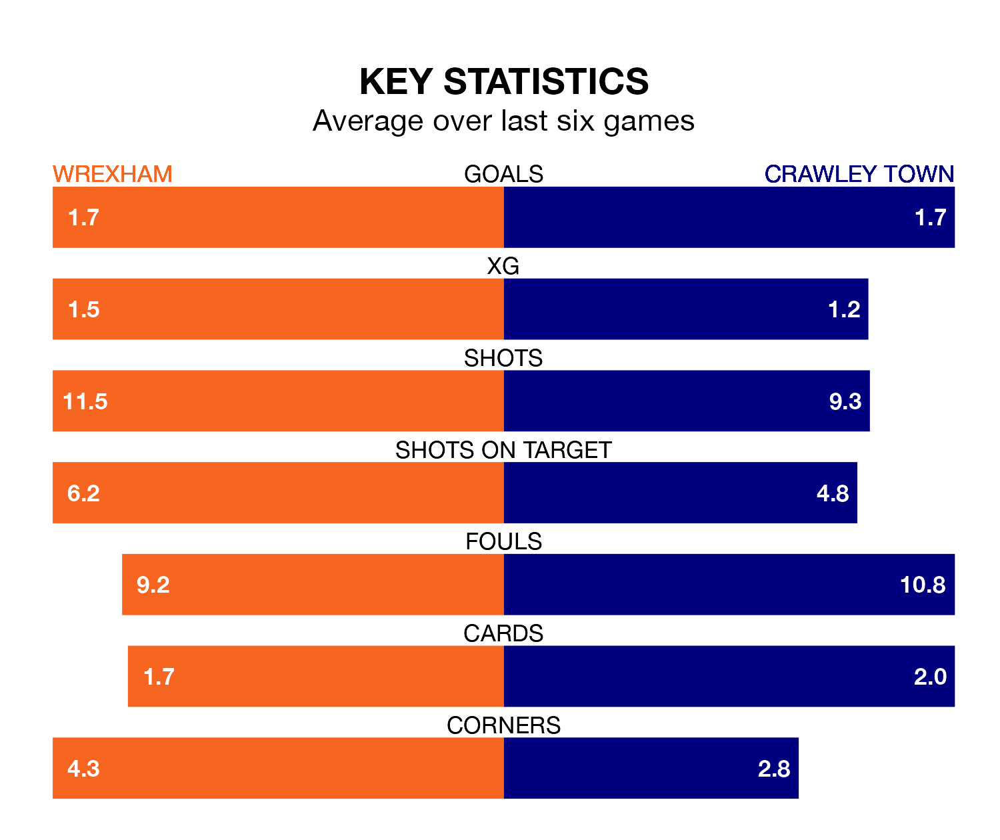

Wrexham host Crawley Town in Saturday's match at Racecourse Ground looking to bounce back from defeat last time out in EFL League Two.
The Dragons, who sit second in the league after 27 games, fell to a 1-0 away defeat to Newport County on January 20.
They face a Crawley side who also lost their last match, a 1-0 defeat to Salford City, and who sit 11th in the table.
With 54 goals in 27 games so far this season, Wrexham are the league's third-highest scorers with 2.0 goals per game. And they are conceding fewer than average, letting in 37 goals at a rate of 1.4 per game.
Crawley are also above average scorers, with 1.6 goals per game, compared to a league average of 1.5. They have conceded 1.7 goals per game.
Town's Liam Kelly is among the league's most creative players, racking up seven assists in 23 appearances so far this season, and holding third spot in EFL League Two's assist charts.
For the Dragons, Jacob Mendy and Samuel George Dalby have set up the most goals, having laid on five assists apiece to date.
The home team are in reasonable form in EFL League Two, with four wins and two losses from their last six games.
With three wins and three losses over that period, the Red Devils' form is worse – they have taken nine points from 18, compared to Wrexham's 12.
Updated: 09:07 (UTC), 24/01/24